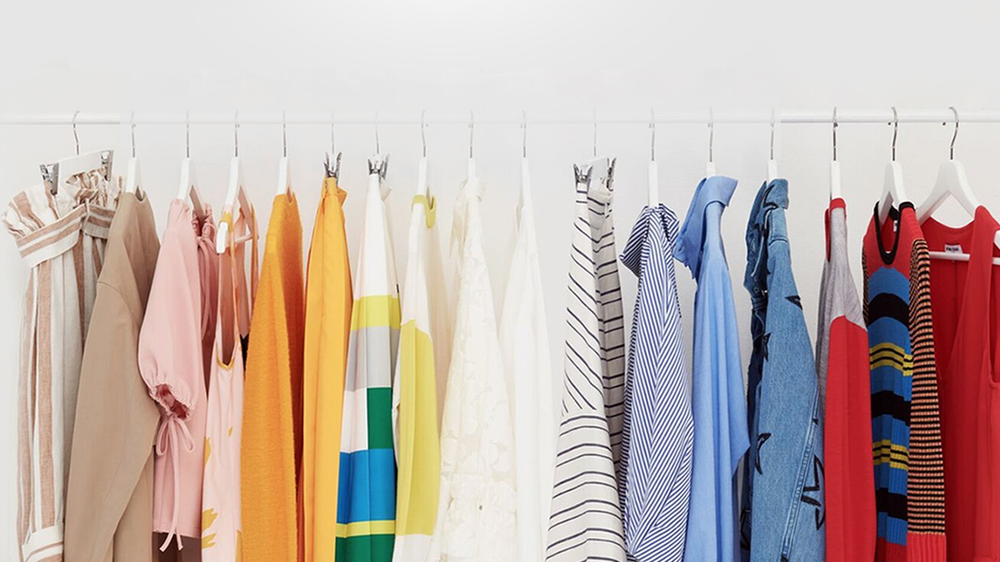

슈스캔 : 찍으면 싸게 구매한다. 2017.05 - 06 | SK Planet AI 이미지 검색 기술을 이용하여 오프라인 구매 경험을 온라인 구매로 사용자 경험을 전이시키는 서비스로기획부터 프로토타이핑, 데이터베이스 구축까지 Lean하게 일한 과제였다.
한글 프로젝트 : 이름으로 패턴만들기 2017.08 - | Side Project 한글의 조형미를 이용하여 자신만의 패턴을 생성하고 그것을 이용한 상품을 구매할 수 있는 서비스를기획부터 개발까지 도전해보기. 현재 디자인을 완료하고 개발 작업중입니다.
 프로젝트 앤 : 패션 스트리밍 서비스 2016.04, 2017.01 - 04 | SK Planet 패션에 관심이 많은 20~30개 진취적인 여성을 타겟으로 하는 사지않고 즐겁게 쓰는 패션 스트리밍 서비스로 한정된 리소스 안에서 최선의 결과를 뽑아내기 위해 노력했던 과제였다.
시럽 스타일 : 핫 플레이스 패션 쇼핑 플랫폼 2016.01 - 12 | SK Planet 홍대, 가로수길, 삼청동 등 유명 거리에서 볼 수 있는 수많은 로드 샵의 다양한 상품을 온라인으로 옮긴 패션 플랫폼으로 서비스 고도화를 위해 정량적 자료를 기반으로 여러가지 실험을 통해 개선해나가는 과제였다.
시럽 스토어 : O2O 마케팅 솔루션 서비스 2015.06 - 12 | SK Planet 커머스 시장에서 가장 효율적으로 단골 고객을 만들 수 있는 통합 O2O 마케팅 솔루션 시럽 스토어 서비스기획, 디자인 및 점주 인터뷰를 통해 다양한 작업을 할 수 있었다.